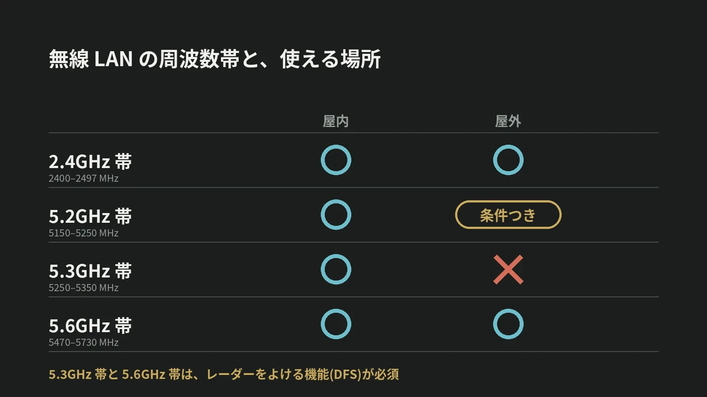

LOTUS VISUAL JOURNAL / 現場の裏側 #23
屋外で使えない Wi-Fi がある。
5GHz 帯の 3 つの区分と、
野外イベントの無線
結論から。無線 LAN の 5GHz 帯は 3 つに分かれていて、屋外でそのまま使えるのは 5.6GHz 帯だけです。
5.3GHz 帯は屋内専用、5.2GHz 帯は屋外では条件つき。野外のイベントで無線を使う前に、機材がどの帯の電波を出すのかを確かめます。
01 / THE TABLE表にすると、こうなる
総務省の電波利用ホームページは、無線 LAN が使う周波数帯ごとに、屋内と屋外で使えるかどうかを表にまとめています。2.4GHz 帯(2400〜2497MHz)は、屋内でも屋外でも使えます。5GHz 帯は、5.2GHz 帯(5150〜5250MHz)、5.3GHz 帯(5250〜5350MHz)、5.6GHz 帯(5470〜5730MHz)の 3 つに分かれています。
屋内では、3 つとも使えます。違いが出るのは屋外です。5.6GHz 帯は使える。5.3GHz 帯は使えない。5.2GHz 帯は「条件付」。新しい 6GHz 帯(5925〜6425MHz)も、屋外で使えるのは出力のごく小さい機器(VLP、25mW 以下)に限られています。
02 / WHY分かれている理由は、レーダーと衛星
電波は目に見えませんが、同じ周波数を先に使っている相手がいます。総務省のページは、5.3GHz 帯で気象レーダーが運用されていることを挙げています。5.2GHz 帯を屋外で使うための条件も、衛星のシステムと気象レーダーに影響を与えないためのものだと説明されています。
屋外で使える帯と条件が細かく決められているのは、天気を見るレーダーや衛星と、同じ周波数を分け合って使うためです。
03 / DFS「1 分待つ」「途中で移る」という決まり
総務省のページによると、5.3GHz 帯と 5.6GHz 帯の機器は、屋内か屋外かを問わず、DFS という機能を備えていなければなりません。情報通信審議会の答申の概要は、DFS を、レーダーの電波を見つけたときに無線 LAN の側がよける機能だと説明しています。
総務省の電波利用ホームページは、その中身をこう説明しています。5.3GHz 帯や 5.6GHz 帯のチャネルで運用を始める前に、60 秒間、レーダーに使われていないことを確かめる。運用中も続けてレーダーの電波を見張り、検知したら自動で止まるか、チャネルを変える。
5.3GHz 帯や 5.6GHz 帯のチャネルでは、電源を入れても、確認の 60 秒が終わるまで通信が始まりません。本番の途中でレーダーを検知すれば、機器は自動で止まるか、別のチャネルへ移ります。どちらも故障ではなく、決まりどおりの動きです。屋外で使える 5.6GHz 帯こそ、この動きを前提に段取りを組む必要があります。
04 / 5.2GHz OUTDOORS5.2GHz 帯を屋外で使う条件
5.2GHz 帯の「条件付」とは何か。総務省のページは、屋外で基地局などとして使う場合の条件を 3 つ挙げています。専用の機器(技術基準適合証明などを受けたもの)を使うこと。事前に「登録局」の手続をすること。告示で定められた「開設区域」の中で使うこと。その 3 つをすべて満たす必要があります。基地局や中継局を運用するには、第三級陸上特殊無線技士の資格も必要です。
スマートフォンなどの端末は、その登録局と通信する場合に限って屋外で使えます。モバイルルーターやテザリングは屋内のみ。自動車の中では、認証を受けた機器に限って使えるとされています。手続と資格と場所がそろって、はじめて屋外で使える帯です。
05 / ON SITELOTUS VISUAL へのご相談では
LOTUS VISUAL へのご相談では
野外の会場でカメラの映像を無線で送る、操作用の端末を Wi-Fi でつなぐ。そうしたご相談では、機材がどの周波数帯とチャネルを使うか、使う場所が屋内か屋外か、国内向けの認証を受けた機材か、を最初に確認させてください。
あわせて、無線が止まったときの有線の経路を用意します。上の決まりのとおり、無線は本番の途中でも止まることがあります。止められない映像は、ケーブルで送ります。
06 / TAKEAWAY今日の持ち帰り
今日の持ち帰り
- 5GHz 帯は 3 つある。屋外でそのまま使えるのは 5.6GHz 帯。5.3GHz 帯は屋内専用、5.2GHz 帯は屋外では条件つき。
- 5.3GHz 帯と 5.6GHz 帯は、レーダーをよける。使う前に 60 秒確かめ、検知したら止まるか、チャネルを移る。
- 止められない映像は、有線で。無線は、機材の帯と場所を確かめたうえで、予備の経路と組にする。
出典:総務省 電波利用ホームページ「無線LANの屋外利用について」(周波数帯ごとの屋内・屋外の区分、5.2GHz 帯の屋外利用の条件、DFS の必須。2026 年 11 月 13 日閲覧)、情報通信審議会 一部答申「次世代高効率無線LANの導入のための技術的条件」概要(平成 31 年 4 月 26 日。DFS の説明)、総務省 電波利用ホームページ「小電力データ通信システム(無線LAN等)」の用語の説明(運用開始前の 60 秒間の確認と運用中の検知。2026 年 11 月 13 日閲覧)、情報通信審議会 陸上無線通信委員会 報告(案)「次世代高効率無線LANの導入のための技術的条件」(平成 31 年 4 月 11 日。DFS の時間の決まり)。